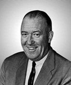
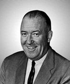

Birth of the Celtics
June 6, 1946
The Boston Celtics were originally founded as a member of the Basketball Association of America by Walter Brown.
Established by Walter Brown in 1946, the Boston Celtics are one of the most successful franchises in all of professional sports with 17 NBA Championships. Below is a brief historical timeline of the team from birth up to present day.
The Boston Celtics were originally founded as a member of the Basketball Association of America by Walter Brown.
The Celtics were one of 17 teams to join the the National Basketball Association as we know it today which was formed via the merge of the Basketball Association of America and the National Basketball League.

The Celtics became the first time to draft an African American player when they drafted Chuck Cooper in the 1950 NBA Draft. Cooper would go on to spend four seasons in Boston. Today, the Celtics have a fellowship named in honor of Chuck Cooper.

Boston made a trade with the St. Louis Hawks, sending future Hall-Of-Famers Ed Macauley and Cliff Hagan in exchange for a rookie center named Bill Russell. That turned out to be a good decision as Russell helped lead the team to 11 NBA Championships over a span of 13 seasons.
Bob Cousy's number 14 and Ed Macauley's number 22 were the first numbers to be retired by the franchise.
The first all-black starting five in NBA history came in a game between the Boston Celtics and the St. Louis Hawks. The Celtics starters were Bill Russell, Sam Jones, K.C. Jones, Satch Sanders, and Willie Naulls.
Bill Russell not only became a player-coach for the Celtics, but he also became the first ever African American Coach in the NBA as Red Auerbach became the franchise's general manager.
In a classic Celtics-Lakers rivalry series, Boston beat LA to win their 10th NBA Championship in Game 6 of the NBA Finals.
The Celtics drafted Larry Bird with the sixth overall pick in the 1978 NBA Draft. They picked correctly as Bird would lead the team to three championships which helped solidify his status and one of the best NBA players of all-time.

The iconic and historic Boston Garden served as the home of the Celtics for 48 seasons. The team started playing in the arena then known as Fleet Center starting in the 1995-96 season. That same building is now known as TD Garden.
With the 10th pick in the 1998 NBA Draft, the Boston Celtics selected Paul Pierce. Pierce helped the team get back to the playoffs on a regular basis and eventually lead the franchise to its 17th Championship in 2008 where he was named Finals MVP.
The Celtics made themselves instant title contenders in the summer of 2007 when they completed two blockbuster trades. One trade acquired Kevin Garnett and the other brought in Ray Allen to join Paul Pierce in the formation of a new "Big Three Era."
In another classic Celtics-Lakers NBA Finals, Boston beat the Los Angeles Lakers to win their 17th NBA Championship in Game 6 of the NBA Finals in front of their home crowd.
Celtics hire Brad Stevens from Butler University as their head coach. Stevens lead Boston to three Eastern Conference Finals in 2017, 2018, and 2020 before becoming the President of Basketball Operations in 2021.
Currently, the Boston Celtics are working hard in the pursuit of their 18th Championship led by Jayson Tatum, Al Horford, Marcus Smart, Robert Williams III, and Jaylen Brown (left to right).